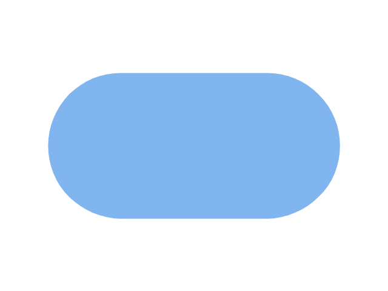
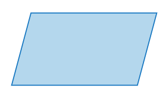
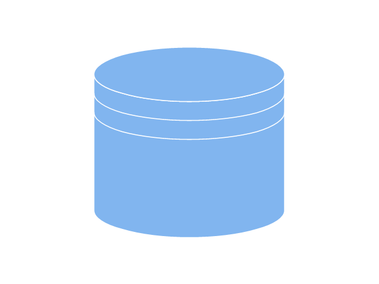

| My Favorite Series | My Childhood Dreams | My Favorite Colors | Flow Chart Symbols |
|---|---|---|---|
Boruto: Naruto Next Generation |
 |
Rose Pink |
The Terminator used to represent start and end of the program  |
Darwin's Game |
Light Pink |
A process flowchart is a diagram that shows the sequential steps of a process and the decisions needed to make the process work. |
|
Sword Art Online |
Soft Pink |
Can represents any type of data in a flowchart  |
|
| Naruto |  |
Black |
Indicates data that displayed for people to read |
| Time to Twice |  |
White |
Indicates a list of information with a standard structure  |